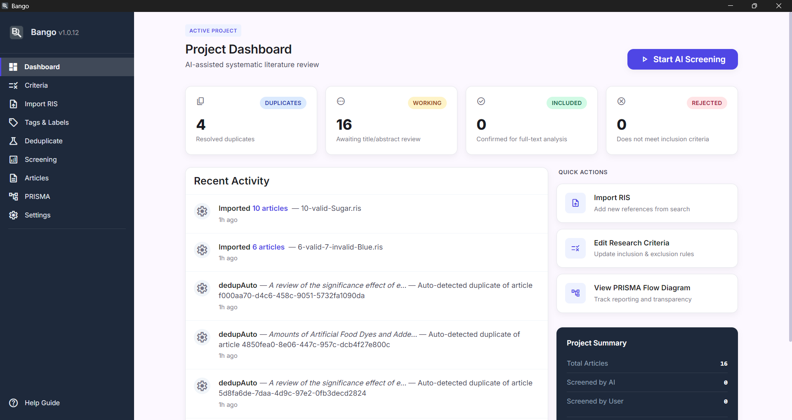
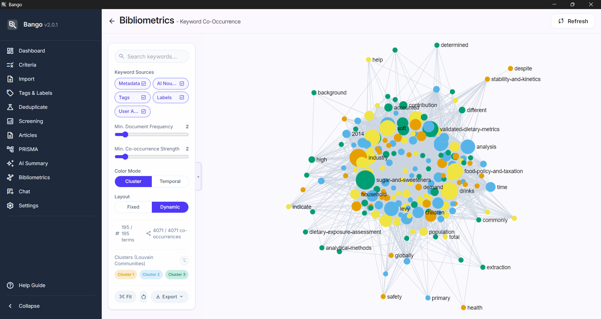
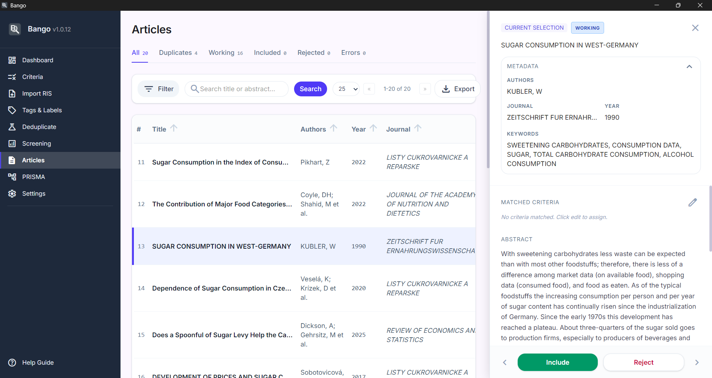
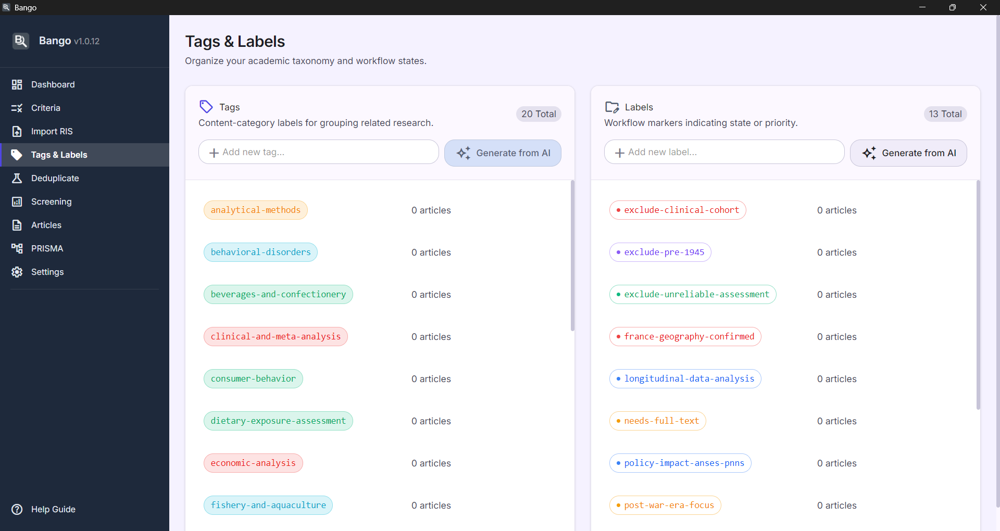

Bango automates the slowest part of any systematic review. Import your RIS or BibTeX file, set your inclusion and exclusion criteria, and let AI evaluate every abstract against your rules. You get a rigorously categorized set of articles with reasoning, tags, and confidence scores.
Then go deeper. Built-in bibliometric analysis, citation networks, and PRISMA diagrams turn your included set into publication-ready insight. Everything stays on your machine.
Free for any researcher, forever. Open source under Apache 2.0, with no subscription, no paywall, and no account required. Verified and signed by the Microsoft Store.

100% free for any researcher. Open source under the Apache 2.0 license. No subscriptions, no feature paywalls, no limits. Built for academics, PhD students, and professional analysts alike.
Bango is built local-first. No cloud uploads. No logins. No accounts. Your library, your notes, and your API keys stay exactly where you put them.
Downloaded and verified through the Microsoft Store. Every update is signed and delivered by Microsoft's pipeline.
Local execution first. SQLite lives on your disk. API keys are encrypted with AES-256-GCM using a machine-derived key.
Project backups omit credentials. Use a hosted model or run a local LLM. The choice, and the data, is yours.
Core features
Stop fighting columns and pivot tables. Bango handles the repetitive, error-prone parts of a review so you can spend your time on judgment calls and synthesis.
Batches of abstracts go to your configured LLM with your aims and criteria attached. You get back a decision, a reasoning paragraph, matched rules, suggested tags, and a confidence score. Thousands of papers screened in the time it takes to read a handful.
Four matching strategies run automatically on import. DOI exact, title plus year, fuzzy similarity scoring, and author plus title. Exact duplicates merge on their own. The fuzzy ones land in a side-by-side review queue so nothing slips through.
AI suggests content tags and workflow labels from your keywords and criteria before screening even begins. Review them, rename them, override anything. Full manual control sits one click away, always.
Six modules run on your included corpus. Co-authorship networks, citation graphs, keyword maps, publication timelines, author productivity rankings, and co-citation analysis. Louvain clustering finds communities automatically. Export to PNG or GEXF.
A standard four-phase flow diagram generates itself from your real record counts. Toggle an exclusion-reason breakdown when a journal asks for it. Export to SVG or PNG for the manuscript.
Track backward references and forward citations for any article. Import detail via RIS or BibTeX, match against your library, and promote interesting references to full articles when they deserve a closer look.



How it works
Drop in an RIS or BibTeX file. Bango parses 30+ metadata fields, deduplicates against your library, and flags anything that needs a second look. Up to 10,000 articles per project.
Define your aims and criteria with priority levels. The AI runs in the background, in batches, with retry and backoff built in. Every decision is logged with reasoning you can audit.
Normalize once and unlock the six bibliometric modules. Export your included list to valid RIS with AI annotations, or back up the whole project to a single file.
Download Bango from the Microsoft Store. It is free for any researcher, open source, and set up takes just a few minutes. Your data stays local the whole time.
Verified and signed by the Microsoft Store.
Not on Windows? Bango also runs on Linux and macOS (Apple Silicon). Grab unsigned builds from GitHub Releases.